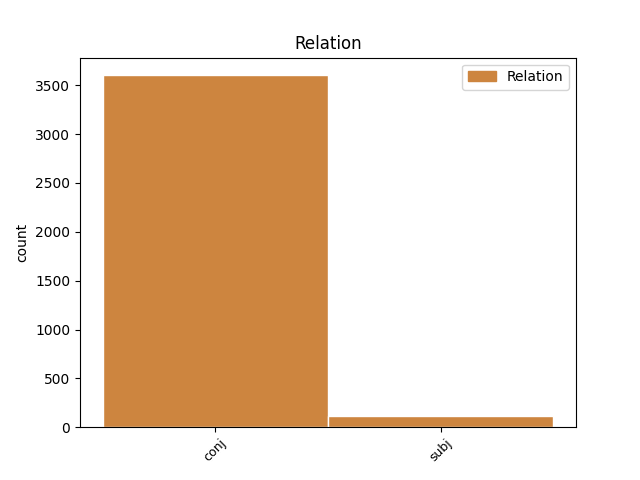
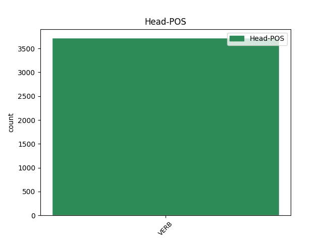
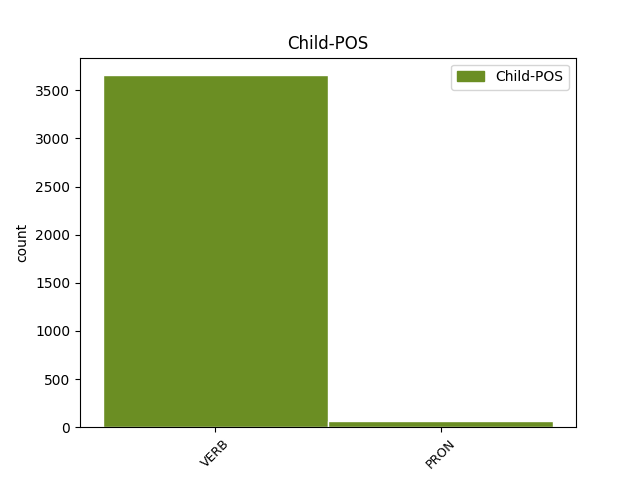

Distribution of features within this leaf



Agreement Rules sorted by frequency.
- When the dependent token is the conjunct(conj) of the head token,
1 καὶ _ _ _ _ 0 _ _ _
2 γὰρ _ _ _ _ 0 _ _ _
3 τάχ̓ _ _ _ _ 0 _ _ _
4 ἄν _ _ _ _ 0 _ _ _
5 τις _ _ _ _ 0 _ _ _
6 οἰκτίσας _ _ _ _ 0 _ _ _
7 ἰδὼν _ _ _ _ 0 _ _ _
8 τάδε _ _ _ _ 0 _ _ _
9 ὕβριν _ _ _ _ 0 _ _ _
10 μὲν _ _ _ _ 0 _ _ _
11 ἐχθήρειεν ἐχθαίρω VERB v3saoa--- Mood=Opt|Number=Sing|Person=3|Tense=Past|VerbForm=Fin|Voice=Act 0 _ _ _
12 ἄρσενος _ _ _ _ 0 _ _ _
13 στόλου _ _ _ _ 0 _ _ _
14 , _ _ _ _ 0 _ _ _
15 ὑμῖν _ _ _ _ 0 _ _ _
16 δ̓ _ _ _ _ 0 _ _ _
17 ἂν _ _ _ _ 0 _ _ _
18 εἴη εἰμί VERB v3spoa--- Mood=Opt|Number=Sing|Person=3|Tense=Pres|VerbForm=Fin|Voice=Act 11 conj _ _
19 δῆμος _ _ _ _ 0 _ _ _
20 εὐμενέστερος _ _ _ _ 0 _ _ _
21 · _ _ _ _ 0 _ _ _
1 ἡμεῖς ἐγώ PRON p1p---mn- Case=Nom|Gender=Masc|Number=Plur|Person=1 22 subj _ _
2 δὲ _ _ _ _ 0 _ _ _
3 παρόντες _ _ _ _ 0 _ _ _
4 ἐπὶ _ _ _ _ 0 _ _ _
5 τὸν _ _ _ _ 0 _ _ _
6 προηγούμενον _ _ _ _ 0 _ _ _
7 ἐνιαυτὸν _ _ _ _ 0 _ _ _
8 τῆς _ _ _ _ 0 _ _ _
9 Ἀθηναίων _ _ _ _ 0 _ _ _
10 στρατείας _ _ _ _ 0 _ _ _
11 ἐπὶ _ _ _ _ 0 _ _ _
12 Κύπρον _ _ _ _ 0 _ _ _
13 Κίμωνος _ _ _ _ 0 _ _ _
14 ἡγουμένου _ _ _ _ 0 _ _ _
15 , _ _ _ _ 0 _ _ _
16 κατὰ _ _ _ _ 0 _ _ _
17 τὴν _ _ _ _ 0 _ _ _
18 ἐν _ _ _ _ 0 _ _ _
19 ἀρχῇ _ _ _ _ 0 _ _ _
20 πρόθεσιν _ _ _ _ 0 _ _ _
21 αὐτοῦ _ _ _ _ 0 _ _ _
22 περιγράφομεν περιγράφω VERB v1ppia--- Mood=Ind|Number=Plur|Person=1|Tense=Pres|VerbForm=Fin|Voice=Act 0 _ _ _
23 τήνδε _ _ _ _ 0 _ _ _
24 τὴν _ _ _ _ 0 _ _ _
25 βίβλον _ _ _ _ 0 _ _ _
26 . _ _ _ _ 0 _ _ _
Disagree Examples:
1 ἐξ _ _ _ _ 0 _ _ _
2 οὗ _ _ _ _ 0 _ _ _
3 γὰρ _ _ _ _ 0 _ _ _
4 ἔκτα _ _ _ _ 0 _ _ _
5 κεῖνος _ _ _ _ 0 _ _ _
6 Ἰφίτου _ _ _ _ 0 _ _ _
7 βίαν _ _ _ _ 0 _ _ _
8 , _ _ _ _ 0 _ _ _
9 ἡμεῖς _ _ _ _ 0 _ _ _
10 μὲν _ _ _ _ 0 _ _ _
11 ἐν _ _ _ _ 0 _ _ _
12 Τραχῖνι _ _ _ _ 0 _ _ _
13 τῇδ̓ _ _ _ _ 0 _ _ _
14 ἀνάστατοι _ _ _ _ 0 _ _ _
15 ξένῳ _ _ _ _ 0 _ _ _
16 παῤ _ _ _ _ 0 _ _ _
17 ἀνδρὶ _ _ _ _ 0 _ _ _
18 ναίομεν ναίω VERB v1ppia--- Mood=Ind|Number=Plur|Person=1|Tense=Pres|VerbForm=Fin|Voice=Act 0 _ _ _
19 , _ _ _ _ 0 _ _ _
20 κεῖνος _ _ _ _ 0 _ _ _
21 δ̓ _ _ _ _ 0 _ _ _
22 ὅπου _ _ _ _ 0 _ _ _
23 βέβηκεν _ _ _ _ 0 _ _ _
24 οὐδεὶς _ _ _ _ 0 _ _ _
25 οἶδε οἶδα VERB v3sria--- Aspect=Perf|Mood=Ind|Number=Sing|Person=3|Tense=Past|VerbForm=Fin|Voice=Act 18 conj _ SpaceAfter=No
26 · _ _ _ _ 0 _ _ _
1 ταῦτα _ _ _ _ 0 _ _ _
2 γὰρ _ _ _ _ 0 _ _ _
3 πόσις _ _ _ _ 0 _ _ _
4 τε _ _ _ _ 0 _ _ _
5 σὸς _ _ _ _ 0 _ _ _
6 ἐφεῖτ̓ ἐφίημι VERB v3saim--- Mood=Ind|Number=Sing|Person=3|Tense=Past|VerbForm=Fin|Voice=Mid 0 _ _ _
7 , _ _ _ _ 0 _ _ _
8 ἐγὼ _ _ _ _ 0 _ _ _
9 δὲ _ _ _ _ 0 _ _ _
10 πιστὸς _ _ _ _ 0 _ _ _
11 ὢν _ _ _ _ 0 _ _ _
12 κείνῳ _ _ _ _ 0 _ _ _
13 τελῶ τελέω VERB v1spia--- Mood=Ind|Number=Sing|Person=1|Tense=Pres|VerbForm=Fin|Voice=Act 6 conj _ SpaceAfter=No
14 . _ _ _ _ 0 _ _ _
1 τί _ _ _ _ 0 _ _ _
2 δ̓ _ _ _ _ 0 _ _ _
3 οἶδ̓ εἶδον VERB v1sria--- Aspect=Perf|Mood=Ind|Number=Sing|Person=1|Tense=Past|VerbForm=Fin|Voice=Act 0 _ _ _
4 ἐγώ _ _ _ _ 0 _ _ _
5 , _ _ _ _ 0 _ _ _
6 τί _ _ _ _ 0 _ _ _
7 δ̓ _ _ _ _ 0 _ _ _
8 ἄν _ _ _ _ 0 _ _ _
9 με _ _ _ _ 0 _ _ _
10 καὶ _ _ _ _ 0 _ _ _
11 κρίνοις κρίνω VERB v2spoa--- Mood=Opt|Number=Sing|Person=2|Tense=Pres|VerbForm=Fin|Voice=Act 3 conj _ SpaceAfter=No
12 ; _ _ _ _ 0 _ _ _
1 πρὸς _ _ _ _ 0 _ _ _
2 δὲ _ _ _ _ 0 _ _ _
3 δώματα _ _ _ _ 0 _ _ _
4 χωρῶμεν _ _ _ _ 0 _ _ _
5 ἤδη _ _ _ _ 0 _ _ _
6 πάντες _ _ _ _ 0 _ _ _
7 , _ _ _ _ 0 _ _ _
8 ὡς _ _ _ _ 0 _ _ _
9 σύ _ _ _ _ 0 _ _ _
10 θ̓ _ _ _ _ 0 _ _ _
11 οἷ _ _ _ _ 0 _ _ _
12 θέλεις _ _ _ _ 0 _ _ _
13 σπεύδῃς σπεύδω VERB v2spsa--- Mood=Sub|Number=Sing|Person=2|Tense=Pres|VerbForm=Fin|Voice=Act 0 _ _ _
14 , _ _ _ _ 0 _ _ _
15 ἐγώ _ _ _ _ 0 _ _ _
16 τε _ _ _ _ 0 _ _ _
17 τἄνδον _ _ _ _ 0 _ _ _
18 ἐξαρκῆ _ _ _ _ 0 _ _ _
19 τιθῶ τίθημι VERB v1spsa--- Mood=Sub|Number=Sing|Person=1|Tense=Pres|VerbForm=Fin|Voice=Act 13 conj _ SpaceAfter=No
20 . _ _ _ _ 0 _ _ _
1 σοὶ _ _ _ _ 0 _ _ _
2 ταῖσδέ _ _ _ _ 0 _ _ _
3 τ̓ _ _ _ _ 0 _ _ _
4 οὐδὲν _ _ _ _ 0 _ _ _
5 εἴργεται ἔργω VERB v3spie--- Mood=Ind|Number=Sing|Person=3|Tense=Pres|VerbForm=Fin|Voice=Mid 0 _ _ _
6 , _ _ _ _ 0 _ _ _
7 τούτους _ _ _ _ 0 _ _ _
8 δ̓ _ _ _ _ 0 _ _ _
9 ἔα ἐάω VERB v2spma--- Mood=Imp|Number=Sing|Person=2|Tense=Pres|VerbForm=Fin|Voice=Act 5 conj _ SpaceAfter=No
10 . _ _ _ _ 0 _ _ _